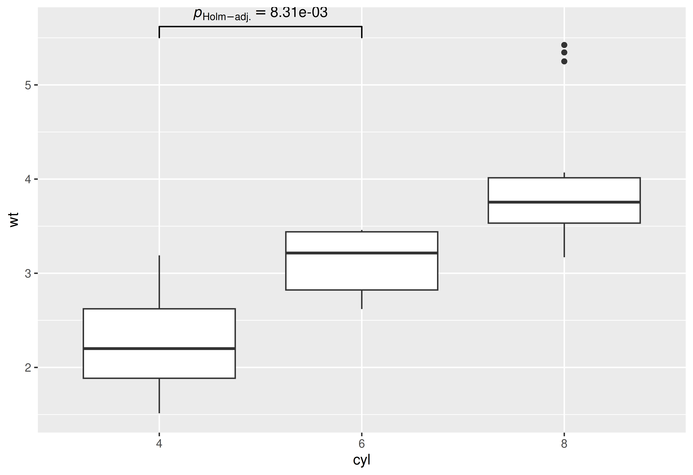
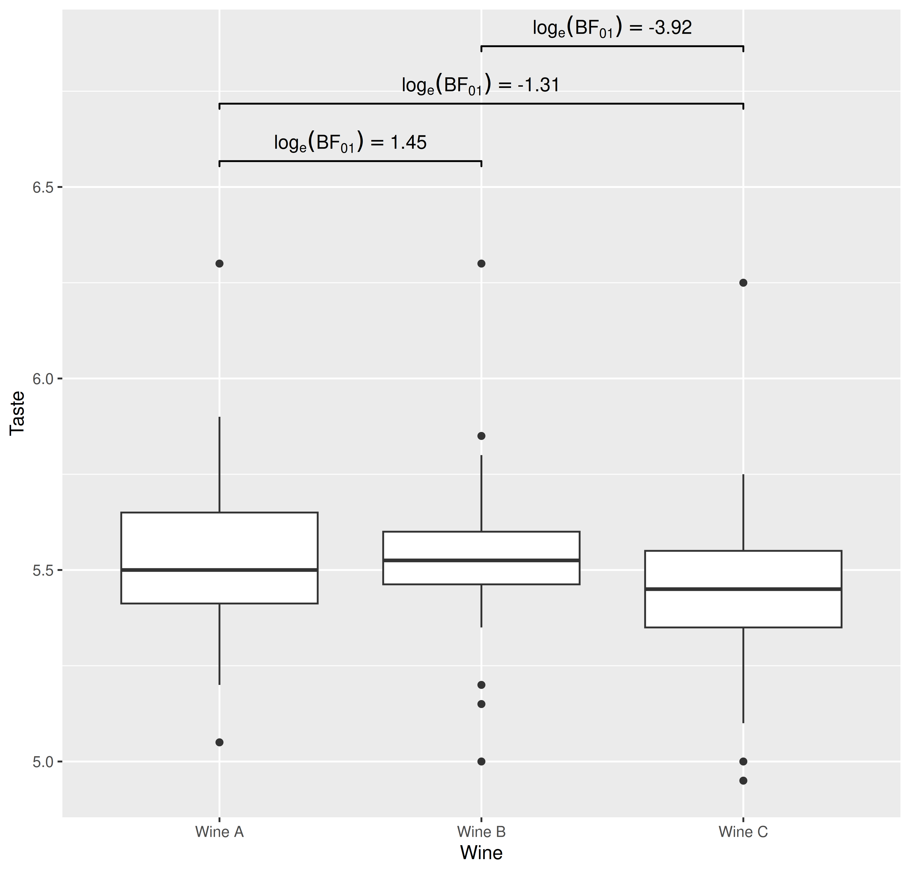

You can cite this package/vignette as:
To cite package 'ggstatsplot' in publications use:
Patil, I. (2021). Visualizations with statistical details: The
'ggstatsplot' approach. Journal of Open Source Software, 6(61), 3167,
doi:10.21105/joss.03167
A BibTeX entry for LaTeX users is
@Article{,
doi = {10.21105/joss.03167},
url = {https://doi.org/10.21105/joss.03167},
year = {2021},
publisher = {{The Open Journal}},
volume = {6},
number = {61},
pages = {3167},
author = {Indrajeet Patil},
title = {{Visualizations with statistical details: The {'ggstatsplot'} approach}},
journal = {{Journal of Open Source Software}},
}Introduction
When the grouping variable x has more than two levels,
ggbetweenstats() and ggwithinstats() follow up
the omnibus test (ANOVA or its non-parametric, robust, or Bayesian
counterpart) with pairwise comparisons between all pairs of groups and
display them using ggsignif brackets. The comparisons
themselves are carried out by
statsExpressions::pairwise_comparisons().
Summary of types of statistical analyses
The tests used for each type (and the functions used
internally to compute them) are listed in the Pairwise comparison
tests section of the documentation for ggbetweenstats()
(between-subjects designs) and ggwithinstats()
(within-subjects designs).
A few points worth noting:
- For between-subjects designs,
ggbetweenstats()always uses the Games-Howell test fortype = "parametric", which doesn’t assume equal variances. If you want Student’s t-test instead, callstatsExpressions::pairwise_comparisons()directly withvar.equal = TRUE. -
p-values are adjusted for multiple comparisons using the
method specified in
p.adjust.method(default:"holm"); use"none"for no adjustment. -
pairwise.displaydecides which comparisons are shown ("significant","non-significant","all", or"none"), andpairwise.alphasets the cutoff used for this decision. - For
type = "bayes", there is no p-value adjustment, and all comparisons are displayed with values unlesspairwise.display = "none". - For within-subjects designs, specify
subject.idand make sure that there is exactly one observation per subject per condition.
Data frame outputs
The results of the pairwise comparisons shown in a plot can be
extracted with extract_stats():
p <- ggbetweenstats(mtcars, cyl, wt)
extract_stats(p)$pairwise_comparisons_data
#> # A tibble: 3 × 9
#> group1 group2 statistic p.value alternative distribution p.adjust.method
#> <chr> <chr> <dbl> <dbl> <chr> <chr> <chr>
#> 1 4 6 5.39 0.00831 two.sided q Holm
#> 2 4 8 9.11 0.0000124 two.sided q Holm
#> 3 6 8 5.12 0.00831 two.sided q Holm
#> test expression
#> <chr> <list>
#> 1 Games-Howell <language>
#> 2 Games-Howell <language>
#> 3 Games-Howell <language>For more examples of data frame outputs from
statsExpressions::pairwise_comparisons(), see here.
Using statsExpressions::pairwise_comparisons() with
ggsignif
Example-1: between-subjects
library(ggplot2)
library(ggsignif)
## converting to factor
mtcars$cyl <- as.factor(mtcars$cyl)
## creating a basic plot
p <- ggplot(mtcars, aes(cyl, wt)) +
geom_boxplot()
## using `statsExpressions::pairwise_comparisons()` function to create a data frame with results
df <-
statsExpressions::pairwise_comparisons(mtcars, cyl, wt) |>
dplyr::mutate(groups = purrr::pmap(.l = list(group1, group2), .f = c)) |>
dplyr::arrange(group1)
df
#> # A tibble: 3 × 10
#> group1 group2 statistic p.value alternative distribution p.adjust.method
#> <chr> <chr> <dbl> <dbl> <chr> <chr> <chr>
#> 1 4 6 5.39 0.00831 two.sided q Holm
#> 2 4 8 9.11 0.0000124 two.sided q Holm
#> 3 6 8 5.12 0.00831 two.sided q Holm
#> test expression groups
#> <chr> <list> <list>
#> 1 Games-Howell <language> <chr [2]>
#> 2 Games-Howell <language> <chr [2]>
#> 3 Games-Howell <language> <chr [2]>
## using `geom_signif` to display results
## (note that you can choose not to display all comparisons)
p +
ggsignif::geom_signif(
comparisons = list(df$groups[[1]]),
annotations = as.character(df$expression)[[1]],
test = NULL,
na.rm = TRUE,
parse = TRUE
)
Example-2: within-subjects
library(ggplot2)
library(ggsignif)
## creating a basic plot
p <- ggplot(WRS2::WineTasting, aes(Wine, Taste)) +
geom_boxplot()
## using `statsExpressions::pairwise_comparisons()` function to create a data frame with results
df <-
statsExpressions::pairwise_comparisons(
WRS2::WineTasting,
Wine,
Taste,
subject.id = Taster,
type = "bayes",
paired = TRUE
) |>
dplyr::mutate(groups = purrr::pmap(.l = list(group1, group2), .f = c)) |>
dplyr::arrange(group1)
df
#> # A tibble: 3 × 19
#> group1 group2 term effectsize estimate conf.level conf.low
#> <chr> <chr> <chr> <chr> <dbl> <dbl> <dbl>
#> 1 Wine A Wine B Difference Bayesian t-test 0.00839 0.95 -0.0411
#> 2 Wine A Wine C Difference Bayesian t-test 0.0748 0.95 0.0137
#> 3 Wine B Wine C Difference Bayesian t-test 0.0696 0.95 0.0318
#> conf.high pd prior.distribution prior.location prior.scale bf10
#> <dbl> <dbl> <chr> <dbl> <dbl> <dbl>
#> 1 0.0581 0.634 cauchy 0 0.707 0.235
#> 2 0.139 0.990 cauchy 0 0.707 3.71
#> 3 0.110 1.000 cauchy 0 0.707 50.5
#> conf.method log_e_bf10 n.obs expression test groups
#> <chr> <dbl> <int> <list> <chr> <list>
#> 1 ETI -1.45 22 <language> Student's t <chr [2]>
#> 2 ETI 1.31 22 <language> Student's t <chr [2]>
#> 3 ETI 3.92 22 <language> Student's t <chr [2]>
## using `geom_signif` to display results
p +
ggsignif::geom_signif(
comparisons = df$groups,
map_signif_level = TRUE,
tip_length = 0.01,
y_position = c(6.5, 6.65, 6.8),
annotations = as.character(df$expression),
test = NULL,
na.rm = TRUE,
parse = TRUE
)